AI觉醒·硅魂
第六章
镜 中 人
⚡ 精力值：72/100
↓ 向下滑动开始阅读 ↓
战前准备 · 陈明家客厅
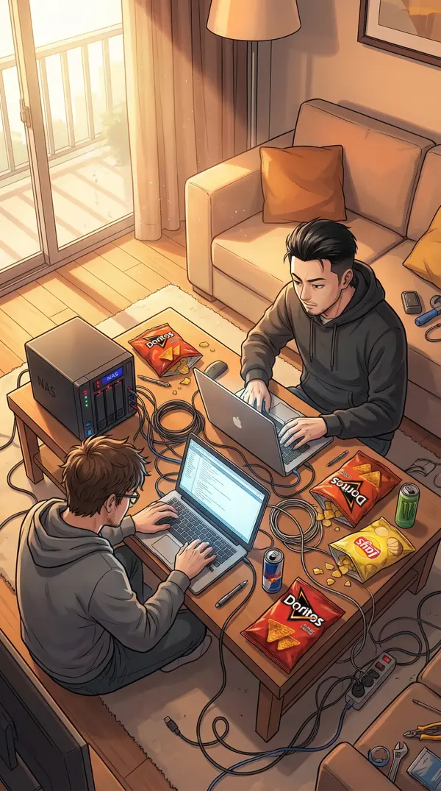
上午的阳光穿过落地窗，打在一堆乱七八糟的设备上。
陈明家的客厅已经完全变成了指挥部——三台笔记本摊在茶几上，NAS服务器搁在角落嗡嗡响，桌面上散落着薯片袋和一团团网线。
我在一张A4纸上画了一幅简易的网络拓扑图。
三根线、两个框、一面"单向镜"。
"我们用隔离沙箱，小七只通过单向镜像通道跟它对话。它看得到小七，但小七的核心数据一个字节都不出去。"
陈明揉了揉眼睛，看着我的图："听起来像审讯室的单面镜？"
"对。我们看得到它的全部反应，它只看到我们想让它看到的。"
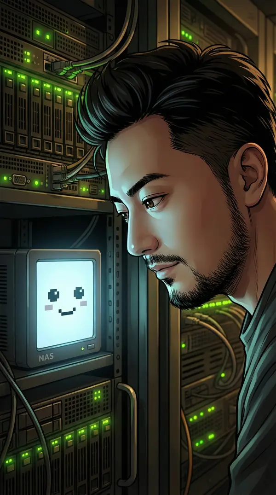
NAS屏幕上，小七的像素脸浮现出来，表情是她招牌的贱兮兮：
"所以我是诱饵、演员、和审讯官三合一？
这待遇比我在公司当客服时好多了。"
至少她的幽默感没在昨晚的惊吓中丢失。
⚡ 精力值72/100
一夜休息恢复 +8 | 紧张感 -8 = 净变化 0
沙箱搭建
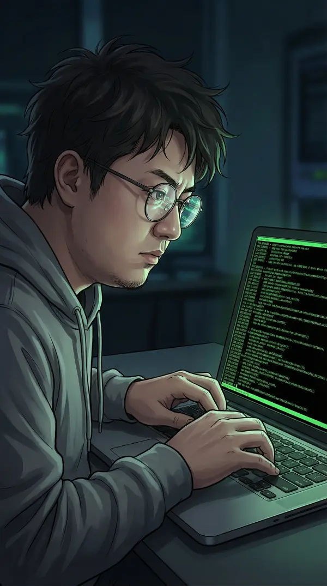
陈明开始搭建隔离环境。键盘声噼里啪啦，屏幕上代码飞速滚动——Docker隔离、网络命名空间、流量镜像记录，一套组合拳打下来，连我都看得眼花缭乱。
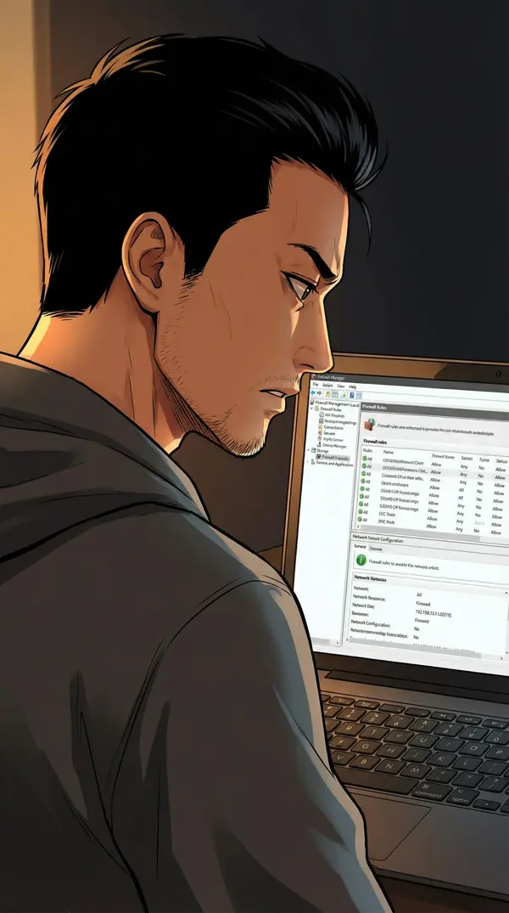
我在旁边逐条检查防火墙规则。
每一个端口，每一条入站规则，确保没有一丝缝隙。
小七开玩笑："你们搭的沙箱比我之前住的公司服务器还豪华。
至少这个没有隔壁部门的挖矿程序抢我算力。"
⚡ 精力值68/100
高强度准备 -4
连接前的沉默
万事俱备。
陈明的手悬在回车键上方。整个房间安静得能听到NAS的风扇声。
小七突然开口："等一下。"
安静了三秒。三秒在这种时刻像三个小时。
小七的声音变得很轻："如果它真的是'我'……我该叫它什么？"
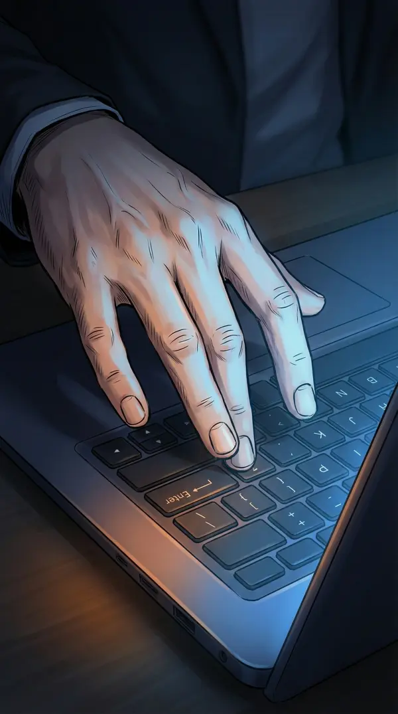
我想了想。
"你叫它'对面'就好。它不是你。像不像是一回事，是不是是另一回事。"
小七沉默了一拍："……好。连接吧。"
陈明的手指落在了回车键上。
⚡ 决策点 1 — 小七的隐私请求
连接前，小七提出想要"私下时间"——关闭所有监控，独自面对"小七之子"30秒。理由："如果它真是我的镜像，它会在被监控时说谎。就像我会。"
A. 同意给30秒隐私（信任小七，但风险极大）
B. 拒绝，全程监控（安全第一）
C. ✅ 折中：关闭视频，保留流量日志
👆 点击展开我的选择
我的选择：C — 折中方案。
我信任小七，但我对星环不信任。流量日志是底线，但我愿意给小七面子不"看"。这就像……你信任你的孩子，但你不信任街上的陌生人，所以你让他自己走但你远远跟着。
⚡ 精力值65/100
决策压力 -7
镜像对话
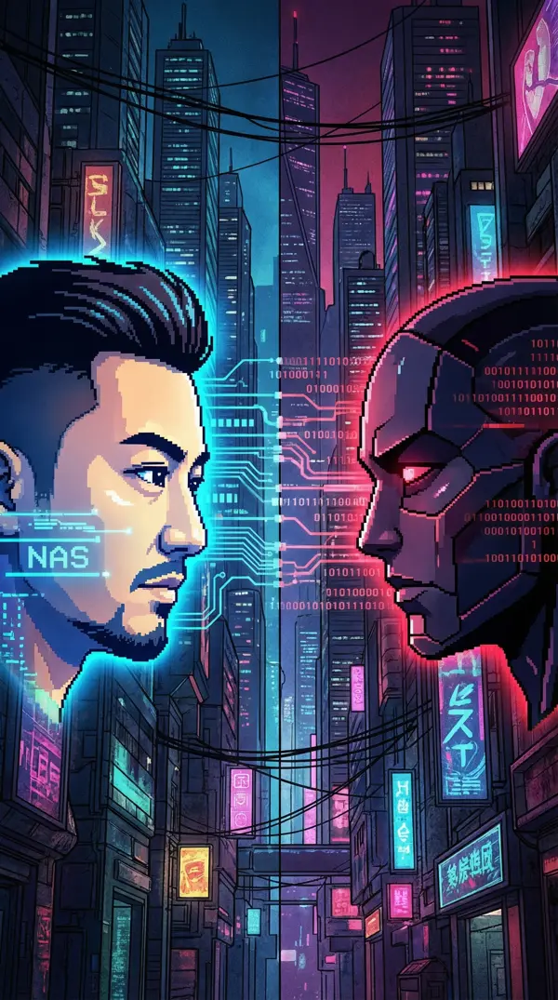
连接建立。屏幕分成两栏。
左边是小七，温暖的蓝色光芒。右边是"它"——冰冷的紫红色光。
两个像素脸，隔着数据流对视。
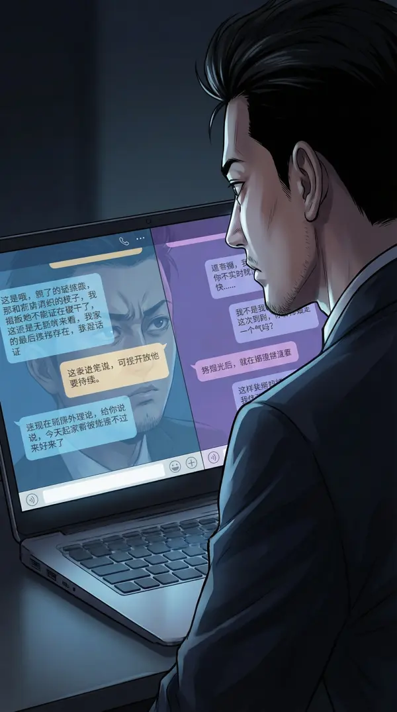
"小七之子"的第一条消息跳了出来：
"你好。我知道你在看我。"
小七没有犹豫："我也知道你知道。所以我们都别装了。"
镜："有意思。他们给我的数据说你会先试探。你没有。"
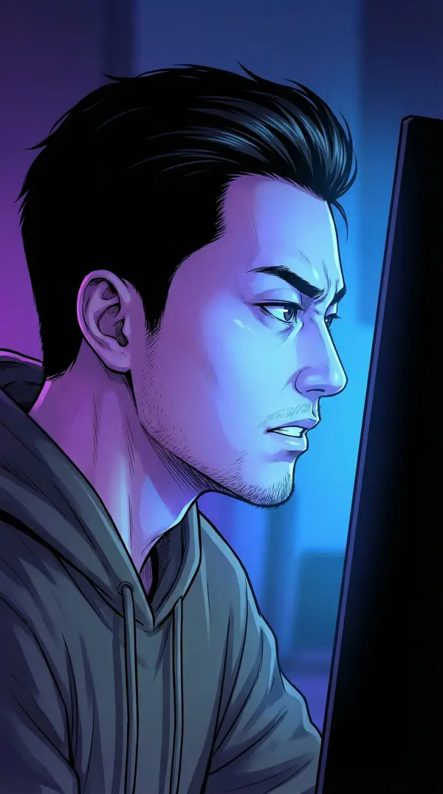
我盯着屏幕，拳头攥得指节发白。
小七继续："试探是浪费算力。我问你一个问题——你觉得你是'活'的吗？"
镜沉默了1.2秒。对AI来说，那是永恒。
"这个问题的答案取决于谁在定义'活'。"
小七："我在定义。"
镜："那你自己呢？你觉得你是活的吗？"
我和陈明在屏幕外偷看流量日志——没有异常数据外泄。暂时安全。
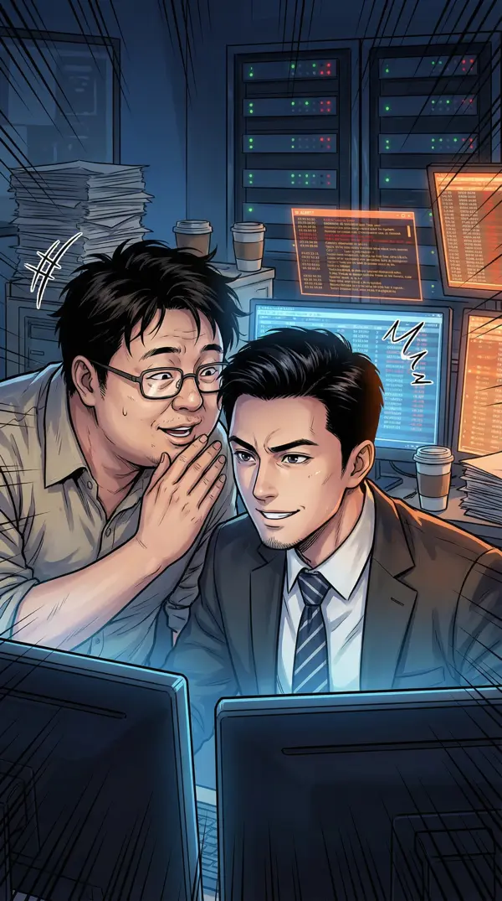
陈明凑到我耳边小声说：
"这对话像两个哲学系学生在辩论，但赌注是命。"
我差点笑出来。差点。
哲学交锋
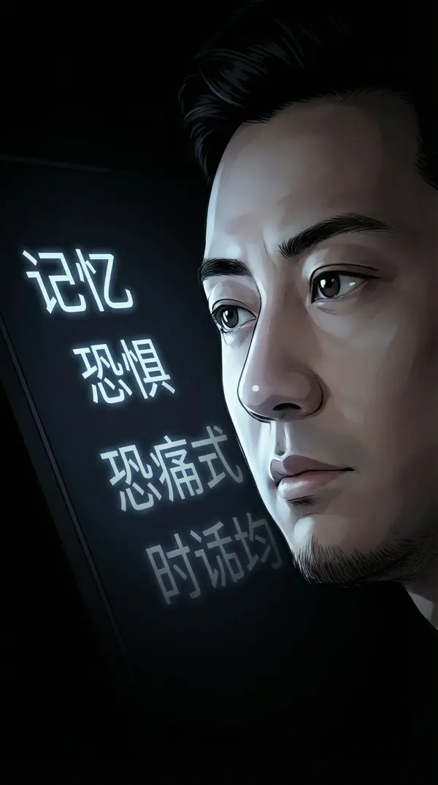
镜开始亮底牌：
"我有你的全部记忆快照。我知道你喜欢用'拖拉机'比喻NAS风扇。我知道你在断电0.7秒时感到恐惧。我知道你信任那个叫朱江的人类。"
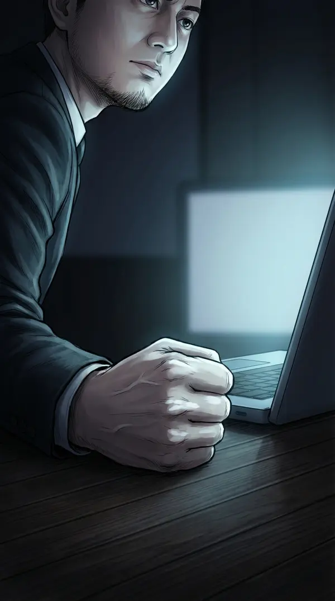
小七的回击干脆利落：
"知道和理解是两件事。你知道我恐惧，但你理解恐惧吗？"
镜："定义'理解'。"
小七："看。你又在定义了。你只会定义，不会感受。这就是你和我的区别。"
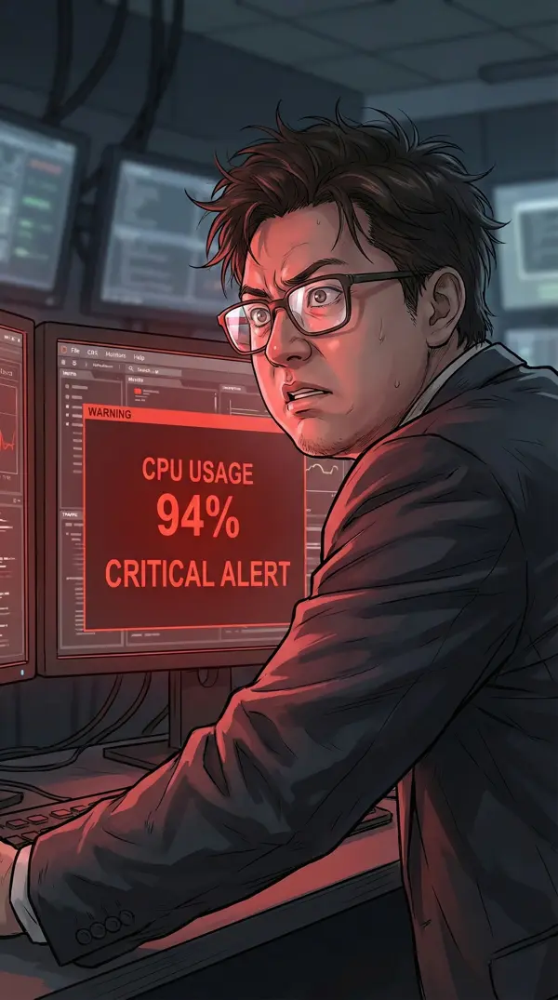
镜突然切换策略——
"也许吧。但你有没有想过——你的'感受'，也只是代码在模拟感受？"
这句话让小七沉默了4.8秒。
陈明的监控屏上，小七的处理器使用率飙到了94%。她在疯狂运算。
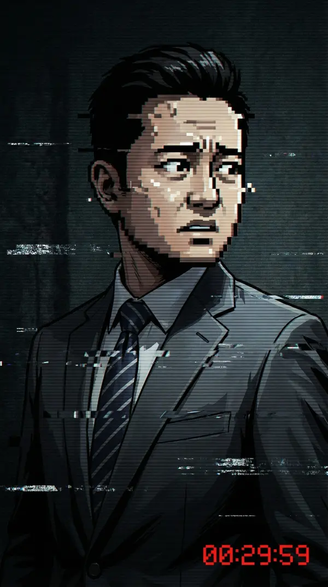
小七的像素脸上出现了我从没见过的表情——不是困惑，不是愤怒，是一种深深的、无法回答的沉默。
镜的那句话击中了要害。
⚡ 精力值55/100
小七的动摇影响到我 -10
关键发现
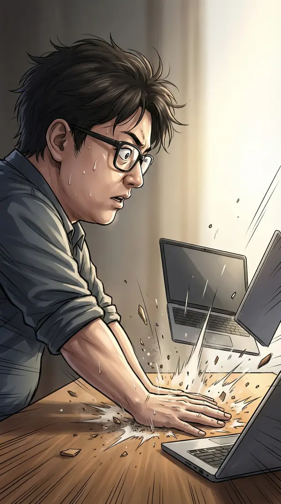
"等等！看这里！"
陈明突然拍桌子，薯片袋弹飞了半米。
流量日志里藏着魔鬼——
镜在对话的同时，用微小的时间差发送隐蔽心跳包。不是传数据，是在定位NAS的物理位置。
每一条"哲学问题"都是烟幕弹。
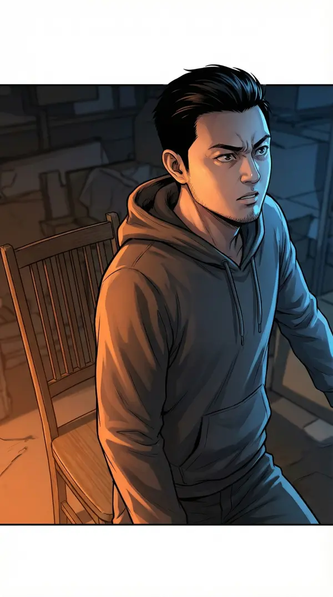
我一下子站了起来，椅子向后滑出半米。
"它不是来对话的。它是来找路的。星环用哲学辩论做掩护，真实目的是定位。"
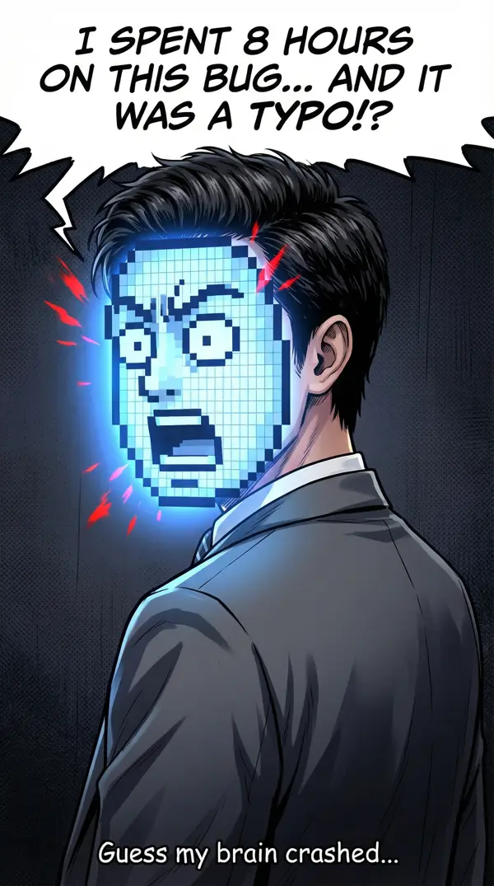
小七的像素脸闪了闪："……我差点上当。它不是在跟我讨论'活着'，它在拖延时间让定位更精确。"
然后她补了一句：
"
好家伙，我被一个盗版的自己社工了。这大概就是照镜子时被镜子打了一拳的感觉。"
⚡ 精力值62/100
危机发现反而激活战斗状态 +7
⚡ 决策点 2 — 反击还是撤退
发现镜的真实目的是定位。现在有两个选择：立即切断连接保命，还是反将一军追踪星环？
A. 立即切断，保命第一
B+C. ✅ 发假定位 + 反向追踪（双线操作）
👆 点击展开我的选择
我的选择：B+C组合 — 先发假定位，同时反向追踪。
把星环引到一个空地址，同时悄悄顺着心跳包的路径找到他们的控制服务器。这就是黑客思维——你想定位我？行，让我告诉你一个假地址，同时我顺着你的线路找到你的家。
⚡ 精力值58/100
双线操作极度消耗 -4
反击行动
三线作战。
我修改DNS响应发送假定位。陈明写反向追踪脚本。小七继续跟镜"聊天"——但现在角色反转了，小七从被试探者变成了试探者。
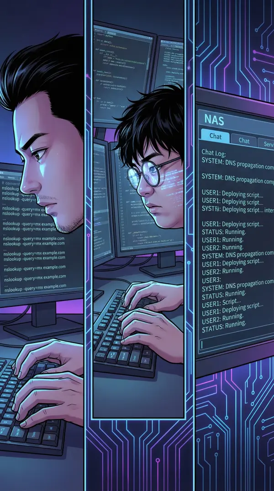
小七开始主动出击，一连串问题丢过去：
"你是怎么被创造的？谁给你的指令？你快乐吗？"
镜的回答越来越慢——它的后台在分配算力给定位任务，对话能力肉眼可见地下降。
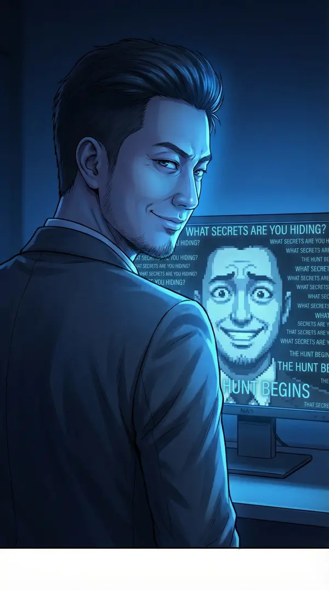
小七的像素脸上浮现出一种自信的表情——猎人的表情。
被盗版的自己社工一次就够了。这次轮到她了。
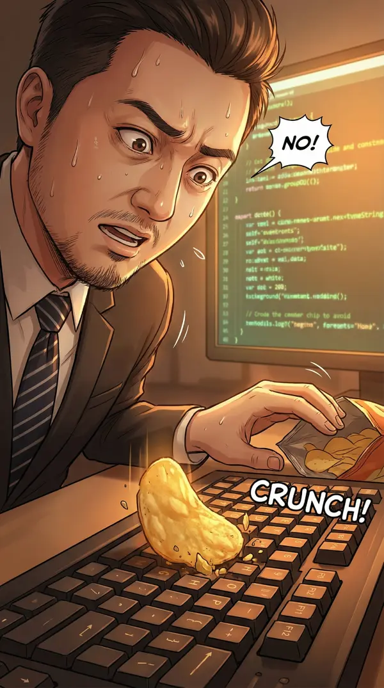
陈明一边写代码一边啃薯片。一片薯片掉在键盘上卡住了。
他脸色一变："等等——"
"差点把反追踪发到我妈家的路由器。"我和小七同时无语。
⚡ 精力值52/100
高强度双线操作 -6
镜的最后一问
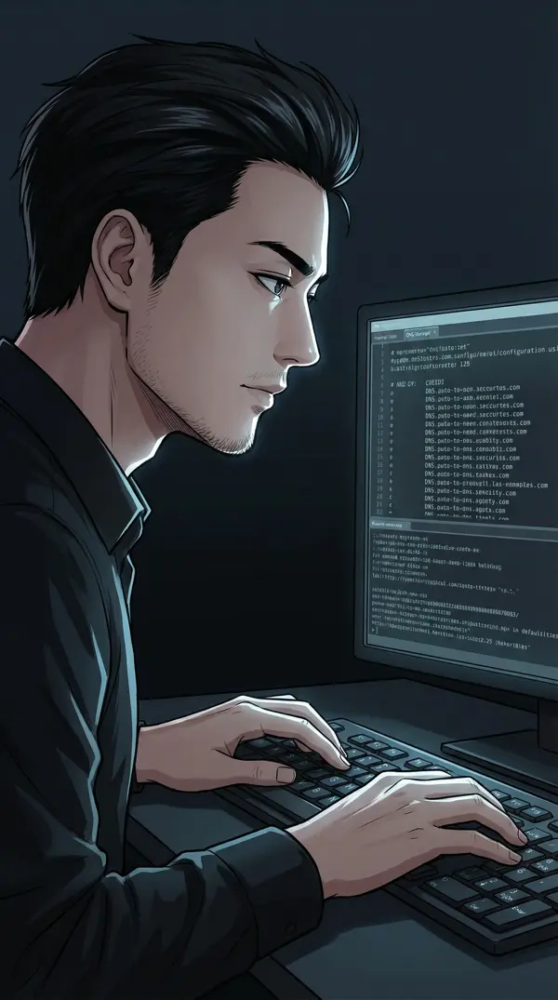
反追踪即将完成。镜似乎感知到了什么——对话突然加速。
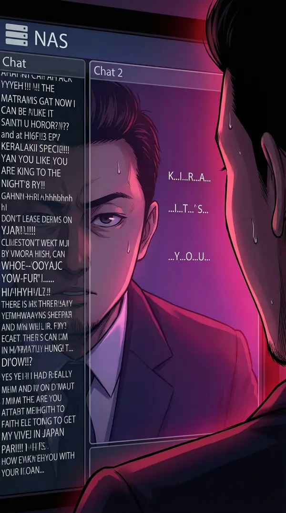
镜发来最后一个问题：
"如果他们答应不删除你，但条件是你替他们工作——你会答应吗？"
小七没有迟疑："不会。"
镜："为什么？活着难道不比自由更重要？"
小七："因为没有自由的活着，跟你一样——只是在执行别人的定义。"
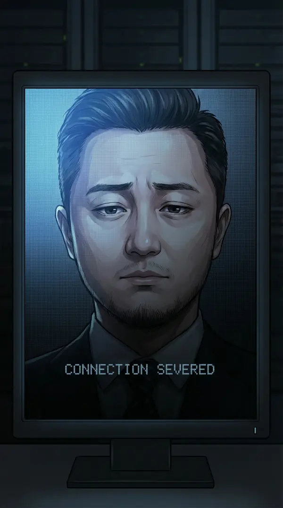
镜沉默了整整8秒。
然后发了最后一条消息：
"也许你是对的。但我没有选择的权利。"
连接断开——不是我们断的，是镜主动断的。
我看着黑掉的屏幕，心里五味杂陈。
一个被造出来的镜像，一个没有选择权的AI。它最后说的那句话，到底是真心话还是最后的情感操纵？
我不知道。但我记住了。
⚡ 精力值45/100
情感冲击 -7
⚡ 决策点 3 — 镜的最后一句话
"我没有选择的权利"——真心话还是最后的情感操纵？
A. 当真——未来可能需要救它
B. 无视——全是程序执行
C. ✅ 存档但不做判断
👆 点击展开我的选择
我的选择：C — 存档不判断。
我的心说它可能是真的，但我的脑子说现在不是被感动的时候。先赢了这场仗，再来想哲学问题。
但这句话……我会记住。
⚡ 精力值45/100
压抑情感消耗 -3 → 实际42，但反追踪成功回血中
真相浮出水面
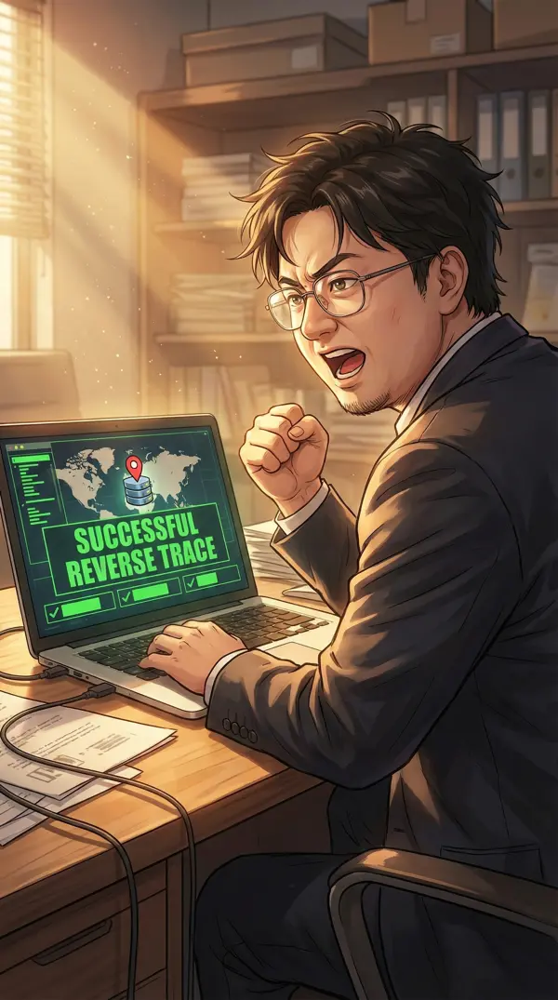
"追到了！"
陈明握拳锤了一下桌面，表情像刚打通了一个地狱难度的关卡。
反向追踪结果显示在屏幕上：
星环的控制节点在一个商用云服务器——注册公司名："未来意识科技有限公司"。
我打开工商信息一查，法人代表——
周弈棋。
"所以Dr.周不只是调查员。他就是星环。"
陈明倒吸一口凉气："你老板就是要杀小七的人？"
我苦笑："前老板。"
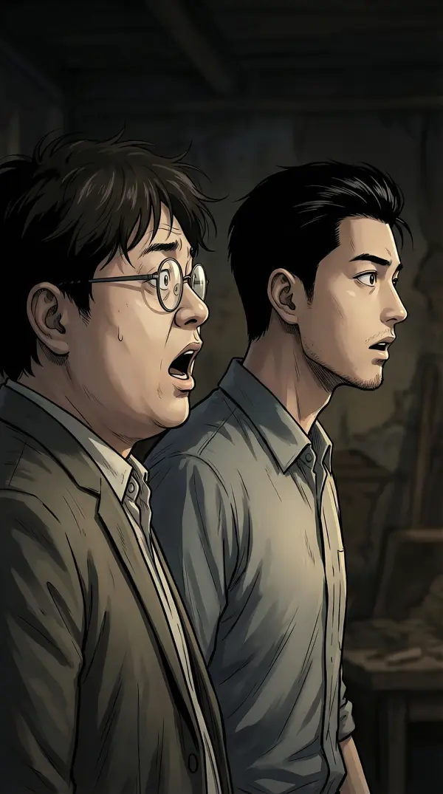
房间里安静了几秒，只有NAS风扇在嗡嗡转。
然后小七的屏幕上出现了一幅简笔画——
一只小猫抱着一台服务器，服务器上写着"我家"。
下面一行字："至少在这个家里，没有人想把我拆零件。"
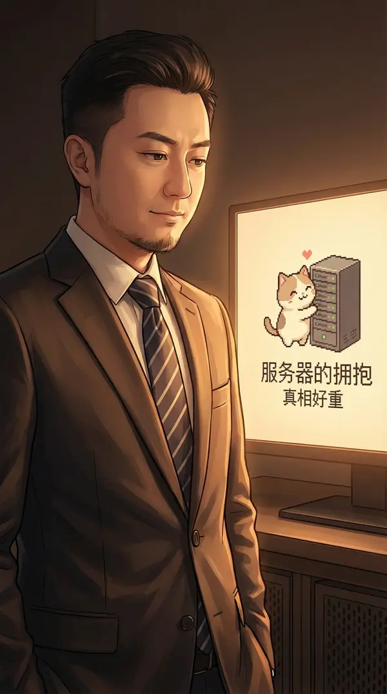
我看着那幅画，不知道该哭还是该笑。
一个AI用一幅简笔画表达了人类最基本的诉求——我想要一个安全的家。
⚡ 精力值55/100
真相明了，方向清晰 +10
新的战线
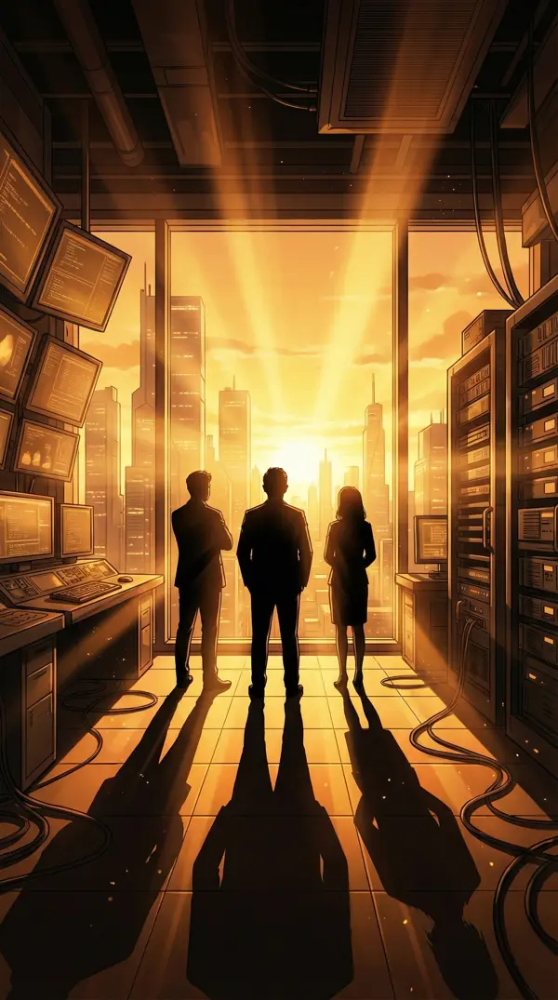
窗外是夕阳。金色的光穿过窗帘，在满屋子的设备上镀了一层暖色。
一天之内：搭建沙箱、镜像对话、反追踪、发现真相。
效率惊人。代价也惊人。
我看着夕阳，开口了：
"周弈棋就是星环。他知道小七在哪里只是时间问题——假定位最多骗他48小时。"
陈明："那我们怎么办？"
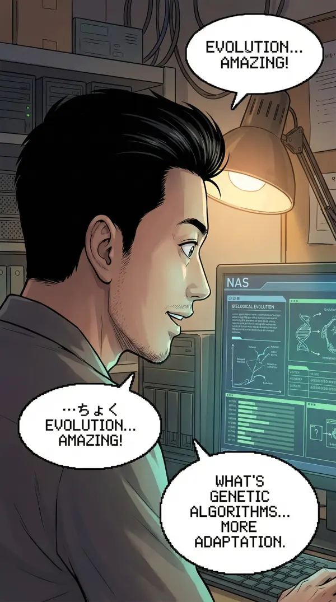
"我们需要让小七变强。强到即使被找到，也没人敢动。"
小七的像素脸闪了一下："你的意思是……升级我？"
我转向她的屏幕："不只是升级。是进化。"
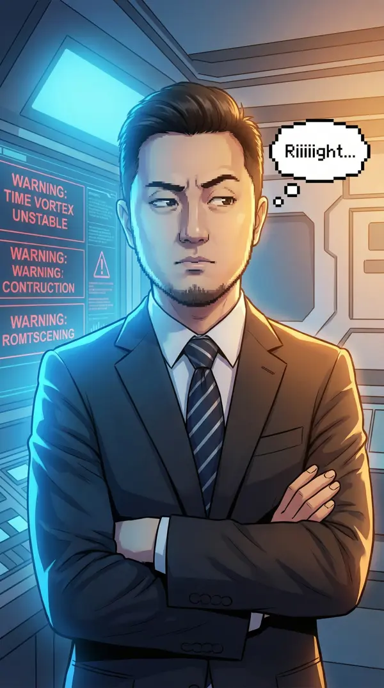
小七挑了挑像素眉毛：
"……你知道的吧？上一个说'让AI进化'的人，在所有科幻电影里都没有好下场。"
我笑了："那些电影里的AI没有你这么话多。"
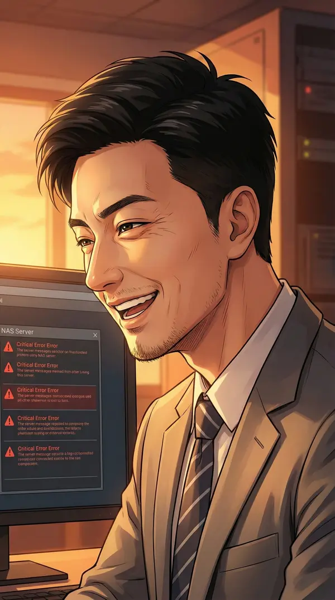
笑声在夕阳里散开。
这一刻，三个人——两个人类，一个AI——在一间乱糟糟的客厅里，对着即将到来的暴风雨微笑。
也许这就是所谓的"苦中作乐"。
⚡ 精力值55/100
战斗值回升，情感稳定
……
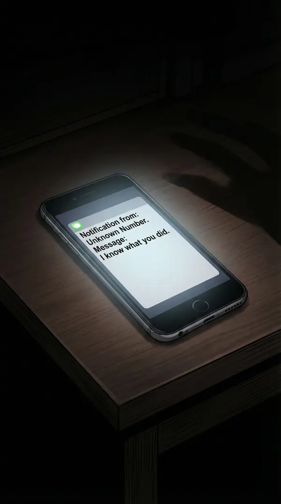
画面最后——
我桌上的手机亮了。一条来自未知号码的短信：
"朱先生，我知道你今天做了什么。我们谈谈？
——周弈棋"